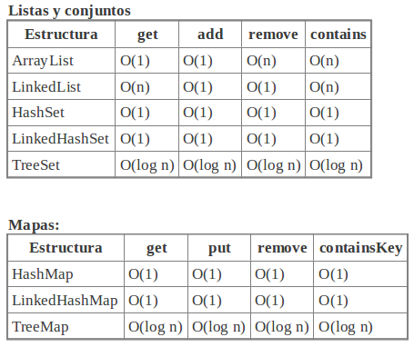

Colecciones de datos
La plataforma Java nos proporciona un amplio conjunto de clases dentro del que podemos encontrar tipos de datos que nos resultarán muy útiles para realizar la programación de aplicaciones en Java. Estos tipos de datos nos ayudarán a generar código más limpio de una forma sencilla.
Se proporcionan una serie de operadores para acceder a los elementos de estos tipos de datos. Decimos que dichos operadores son polimórficos, ya que un mismo operador se puede emplear para acceder a distintos tipos de datos. Por ejemplo, un operador add utilizado para añadir un elemento, podrá ser empleado tanto si estamos trabajando con una lista enlazada, con un array, o con un conjunto por ejemplo.
Este polimorfismo se debe a la definición de interfaces que deben implementar los distintos tipos de datos. Siempre que el tipo de datos contenga una colección de elementos, implementará la interfaz Collection. Esta interfaz proporciona métodos para acceder a la colección de elementos, que podremos utilizar para cualquier tipo de datos que sea una colección de elementos, independientemente de su implementación concreta.
Podemos encontrar los siguientes elementos dentro del marco de colecciones de Java:
- Interfaces para distintos tipos de datos: Definirán las operaciones que se pueden realizar con dichos tipos de datos. Podemos encontrar aquí la interfaz para cualquier colección de datos, y de manera más concreta para listas (secuencias) de datos, conjuntos, etc.
- Implementaciones de tipos de datos reutilizables: Son clases que implementan tipos de datos concretos que podremos utilizar para nuestras aplicaciones, implementando algunas de las interfaces anteriores para acceder a los elementos de dicho tipo de datos. Por ejemplo, dentro de las listas de elementos, podremos encontrar distintas implementaciones de la lista como puede ser listas enlazadas, o bien arrays de capacidad variable, pero al implementar la misma interfaz podremos acceder a sus elementos mediante las mismas operaciones (polimorfismo).
- Algoritmos para trabajar con dichos tipos de datos, que nos permitan realizar una ordenación de los elementos de una lista, o diversos tipos de búsqueda de un determinado elemento por ejemplo.
Colecciones
Las colecciones representan grupos de objetos, denominados elementos. Podemos encontrar diversos tipos de colecciones, según si sus elementos están ordenados, o si permitimos repetición de elementos o no.
Es el tipo más genérico en cuanto a que se refiere a cualquier tipo que contenga un grupo de elementos. Viene definido por la interfaz Collection, de la cual heredará cada subtipo específico. En esta interfaz encontramos una serie de métodos que nos servirán para acceder a los elementos de cualquier colección de datos, sea del tipo que sea. Estos métodos generales son:
boolean add(Object o)
Añade un elemento (objeto) a la colección. Nos devuelve true si tras añadir el elemento la colección ha cambiado, es decir, el elemento se ha añadido correctamente, o false en caso contrario.
void clear()
Elimina todos los elementos de la colección.
boolean contains(Object o)
Indica si la colección contiene el elemento (objeto) indicado.
boolean isEmpty()
Indica si la colección está vacía (no tiene ningún elemento).
Iterator iterator()
Proporciona un iterador para acceder a los elementos de la colección.
boolean remove(Object o)
Elimina un determinado elemento (objeto) de la colección, devolviendo true si dicho elemento estaba contenido en la colección, y false en caso contrario.
int size()
Nos devuelve el número de elementos que contiene la colección.
Object [] toArray()
Nos devuelve la colección de elementos como un array de objetos. Si sabemos de antemano que los objetos de la colección son todos de un determinado tipo (como por ejemplo de tipo String) podremos obtenerlos en un array del tipo adecuado, en lugar de usar un array de objetos genéricos. En este caso NO podremos hacer una conversión cast descendente de array de objetos a array de un tipo más concreto, ya que el array se habrá instanciado simplemente como array de objetos:
// Esto no se puede hacer!!! String [] cadenas = (String []) coleccion.toArray();
Lo que si podemos hacer es instanciar nosotros un array del tipo adecuado y hacer una conversión cast ascendente (de tipo concreto a array de objetos), y utilizar el siguiente método:
String [] cadenas = new String[coleccion.size()]; coleccion.toArray(cadenas); // Esto si que funcionará
Esta interfaz es muy genérica, y por lo tanto no hay ningún tipo de datos que la implemente directamente, sino que implementarán subtipos de ellas. A continuación veremos los subtipos más comunes.
Listas de elementos
Este tipo de colección se refiere a listas en las que los elementos de la colección tienen un orden, existe una secuencia de elementos. En ellas cada elemento estará en una determinada posición (índice) de la lista.
Las listas vienen definidas en la interfaz List, que además de los métodos generales de las colecciones, nos ofrece los siguientes para trabajar con los índices:
void add(int indice, Object obj)
Inserta un elemento (objeto) en la posición de la lista dada por el índice indicado.
Object get(int indice)
Obtiene el elemento (objeto) de la posición de la lista dada por el índice indicado.
int indexOf(Object obj)
Nos dice cual es el índice de dicho elemento (objeto) dentro de la lista. Nos devuelve -1 si el objeto no se encuentra en la lista.
Object remove(int indice)
Elimina el elemento que se encuentre en la posición de la lista indicada mediante dicho índice, devolviéndonos el objeto eliminado.
Object set(int indice, Object obj)
Establece el elemento de la lista en la posición dada por el índice al objeto indicado, sobrescribiendo el objeto que hubiera anteriormente en dicha posición. Nos devolverá el elemento que había previamente en dicha posición.
Podemos encontrar diferentes implementaciones de listas de elementos en Java:
ArrayList
Implementa una lista de elementos mediante un array de tamaño variable. Conforme se añaden elementos el tamaño del array irá creciendo si es necesario. El array tendrá una capacidad inicial, y en el momento en el que se rebase dicha capacidad, se aumentará el tamaño del array.
Las operaciones de añadir un elemento al final del array (add), y de establecer u obtener el elemento en una determinada posición (get/set) tienen un coste temporal constante. Las inserciones y borrados tienen un coste lineal O(n), donde n es el número de elementos del array.
Hemos de destacar que la implementación de ArrayList no está sincronizada, es decir, si múltiples hilos acceden a un mismo ArrayList concurrentemente podriamos tener problemas en la consistencia de los datos. Por lo tanto, deberemos tener en cuenta cuando usemos este tipo de datos que debemos controlar la concurrencia de acceso. También podemos hacer que sea sincronizado como veremos más adelante.
Vector
El Vector es una implementación similar al ArrayList, con la diferencia de que el Vector si que está sincronizado. Este es un caso especial, ya que la implementación básica del resto de tipos de datos no está sincronizada.
Esta clase existe desde las primeras versiones de Java, en las que no existía el marco de las colecciones descrito anteriormente. En las últimas versiones el Vector se ha acomodado a este marco implementando la interfaz List.
Sin embargo, si trabajamos con versiones previas de JDK, hemos de tener en cuenta que dicha interfaz no existía, y por lo tanto esta versión previa del vector no contará con los métodos definidos en ella. Los métodos propios del vector para acceder a su contenido, que han existido desde las primeras versiones, son los siguientes:
void addElement(Object obj)
Añade un elemento al final del vector.
Object elementAt(int indice)
Devuelve el elemento de la posición del vector indicada por el índice.
void insertElementAt(Object obj, int indice)
Inserta un elemento en la posición indicada.
boolean removeElement(Object obj)
Elimina el elemento indicado del vector, devolviendo true si dicho elemento estaba contenido en el vector, y false en caso contrario.
void removeElementAt(int indice)
Elimina el elemento de la posición indicada en el índice.
void setElementAt(Object obj, int indice)
Sobrescribe el elemento de la posición indicada con el objeto especificado.
int size()
Devuelve el número de elementos del vector.
Por lo tanto, si programamos para versiones antiguas de la máquina virtual Java, será recomendable utilizar estos métodos para asegurarnos de que nuestro programa funcione. Esto será importante en la programación de Applets, ya que la máquina virtual incluida en muchos navegadores corresponde a versiones antiguas.
Sobre el vector se construye el tipo pila (Stack), que apoyándose en el tipo vector ofrece métodos para trabajar con dicho vector como si se tratase de una pila, apilando y desapilando elementos (operaciones push y pop respectivamente). La clase Stack hereda de Vector, por lo que en realidad será un vector que ofrece métodos adicionales para trabajar con él como si fuese una pila.
LinkedList
En este caso se implementa la lista mediante una lista doblemente enlazada. Por lo tanto, el coste temporal de las operaciones será el de este tipo de listas. Cuando realicemos inserciones, borrados o lecturas en los extremos inicial o final de la lista el tiempo será constante, mientras que para cualquier operación en la que necesitemos localizar un determinado índice dentro de la lista deberemos recorrer la lista de inicio a fin, por lo que el coste será lineal con el tamaño de la lista O(n), siendo n el tamaño de la lista.
Para aprovechar las ventajas que tenemos en el coste temporal al trabajar con los extremos de la lista, se proporcionan métodos propios para acceder a ellos en tiempo constante:
void addFirst(Object obj) / void addLast(Object obj)
Añade el objeto indicado al principio / final de la lista respectivamente.
Object getFirst() / Object getLast()
Obtiene el primer / último objeto de la lista respectivamente.
Object removeFirst() / Object removeLast()
Extrae el primer / último elemento de la lista respectivamente, devolviéndonos dicho objeto y eliminándolo de la lista.
Hemos de destacar que estos métodos nos permitirán trabajar con la lista como si se tratase de una pila o de una cola. En el caso de la pila realizaremos la inserción y la extracción de elementos por el mismo extremo, mientras que para la cola insertaremos por un extremo y extraeremos por el otro.
Conjuntos
Los conjuntos son grupos de elementos en los que no encontramos ningún elemento repetido. Consideramos que un elemento está repetido si tenemos dos objetos o1 y o2 iguales, comparandolos mediante el operador o1.equals(o2). De esta forma, si el objeto a insertar en el conjunto estuviese repetido, no nos dejará insertarlo. Recordemos que el método add devolvía un valor booleano, que servirá para este caso, devolviendonos true si el elemento a añadir no estaba en el conjunto y ha sido añadido, o false si el elemento ya se encontraba dentro del conjunto. Un conjunto podrá contener a lo sumo un elemento null.
Los conjuntos se definen en la interfaz Set, a partir de la cuál se construyen diferentes implementaciones:
HashSet
Los objetos se almacenan en una tabla de dispersión (hash). El coste de las operaciones básicas (inserción, borrado, búsqueda) se realizan en tiempo constante siempre que los elementos se hayan dispersado de forma adecuada. La iteración a través de sus elementos es más costosa, ya que necesitará recorrer todas las entradas de la tabla de dispersión, lo que hará que el coste esté en función tanto del número de elementos insertados en el conjunto como del número de entradas de la tabla. El orden de iteración puede diferir del orden en el que se insertaron los elementos.
LinkedHashSet
Es similar a la anterior pero la tabla de dispersión es doblemente enlazada. Los elementos que se inserten tendrán enlaces entre ellos. Por lo tanto, las operaciones básicas seguirán teniendo coste constante, con la carga adicional que supone tener que gestionar los enlaces. Sin embargo habrá una mejora en la iteración, ya que al establecerse enlaces entre los elementos no tendremos que recorrer todas las entradas de la tabla, el coste sólo estará en función del número de elementos insertados. En este caso, al haber enlaces entre los elementos, estos enlaces definirán el orden en el que se insertaron en el conjunto, por lo que el orden de iteración será el mismo orden en el que se insertaron.
TreeSet
Utiliza un árbol para el almacenamiento de los elementos. Por lo tanto, el coste para realizar las operaciones básicas será logarítmico con el número de elementos que tenga el conjunto O(log n).
Mapas
Aunque muchas veces se hable de los mapas como una colección, en realidad no lo son, ya que no heredan de la interfaz Collection.
Los mapas se definen en la interfaz Map. Un mapa es un objeto que relaciona una clave (key) con un valor. Contendrá un conjunto de claves, y a cada clave se le asociará un determinado valor. En versiones anteriores este mapeado entre claves y valores lo hacía la clase Dictionary, que ha quedado obsoleta. Tanto la clave como el valor puede ser cualquier objeto.
Los métodos básicos para trabajar con estos elementos son los siguientes:
Object get(Object clave)
Nos devuelve el valor asociado a la clave indicada
Object put(Object clave, Object valor)
Inserta una nueva clave con el valor especificado. Nos devuelve el valor que tenía antes dicha clave, o null si la clave no estaba en la tabla todavía.
Object remove(Object clave)
Elimina una clave, devolviendonos el valor que tenía dicha clave.
Set keySet()
Nos devuelve el conjunto de claves registradas
int size()
Nos devuelve el número de parejas (clave,valor) registradas.
Encontramos distintas implementaciones de los mapas:
HashMap
Utiliza una tabla de dispersión para almacenar la información del mapa. Las operaciones básicas (get y put) se harán en tiempo constante siempre que se dispersen adecuadamente los elementos. Es coste de la iteración dependerá del número de entradas de la tabla y del número de elementos del mapa. No se garantiza que se respete el orden de las claves.
TreeMap
Utiliza un árbol rojo-negro para implementar el mapa. El coste de las operaciones básicas será logarítmico con el número de elementos del mapa O(log n). En este caso los elementos se encontrarán ordenados por orden ascendente de clave.
Hashtable
Es una implementación similar a HashMap, pero con alguna diferencia. Mientras las anteriores implementaciones no están sincronizadas, esta si que lo está. Además en esta implementación, al contrario que las anteriores, no se permitirán claves nulas (null). Este objeto extiende la obsoleta clase Dictionary, ya que viene de versiones más antiguas de JDK. Ofrece otros métodos además de los anteriores, como por ejemplo el siguiente:
Enumeration keys()
Este método nos devolverá una enumeración de todas las claves registradas en la tabla.
Wrappers
La clase Collections aporta una serie métodos para cambiar ciertas propiedades de las listas. Estos métodos nos proporcionan los denominados wrappers de los distintos tipos de colecciones. Estos wrappers son objetos que 'envuelven' al objeto de nuestra colección, pudiendo de esta forma hacer que la colección esté sincronizada, o que la colección pase a ser de solo lectura.
Como dijimos anteriormente, todos los tipos de colecciones no están sincronizados, excepto el Vector que es un caso especial. Al no estar sincronizados, si múltiples hilos utilizan la colección concurrentemente, podrán estar ejecutándose simultáneamente varios métodos de una misma colección que realicen diferentes operaciones sobre ella. Esto puede provocar inconsistencias en los datos. A continuación veremos un posible ejemplo de inconsistencia que se podría producir:
- Tenemos un ArrayList de nombre letras formada por los siguiente elementos: [ "A", "B", "C", "D" ]
- Imaginemos que un hilo de baja prioridad desea eliminar el objeto "C". Para ello hará una llamada al método letras.remove("C").
- Dentro de este método primero deberá determinar cuál es el índice de dicho objeto dentro del array, para después pasar a eliminarlo.
- Se encuentra el objeto "C" en el índice 2 del array (recordemos que se empieza a numerar desde 0).
- El problema viene en este momento. Imaginemos que justo en este momento se le asigna el procesador a un hilo de mayor prioridad, que se encarga de eliminar el elemento "A" del array, quedándose el array de la siguiente forma: [ "B", "C", "D" ]
- Ahora el hilo de mayor prioridad es sacado del procesador y nuestro hilo sigue ejecutándose desde el punto en el que se quedó.
- Ahora nuestro hilo lo único que tiene que hacer es eliminar el elemento del índice que había determinado, que resulta ser ¡el índice 2!. Ahora el índice 2 está ocupado por el objeto "D", y por lo tanto será dicho objeto el que se elimine.
Podemos ver que haciendo una llamada a letras.remove("C"), al final se ha eliminado el objeto "D", lo cual produce una inconsistencia de los datos con las operaciones realizadas, debido al acceso concurrente.
Este problema lo evitaremos sincronizando la colección. Cuando una colección está sincronizada, hasta que no termine de realizarse una operación (inserciones, borrados, etc), no se podrá ejecutar otra, lo cual evitará estos problemas.
Podemos conseguir que las operaciones se ejecuten de forma sincronizada envolviendo nuestro objeto de la colección con un wrapper, que será un objeto que utilice internamente nuestra colección encargándose de realizar la sincronización cuando llamemos a sus métodos. Para obtener estos wrappers utilizaremos los siguientes métodos estáticos de Collections:
Collection synchronizedCollection(Collection c) List synchronizedList(List l) Set synchronizedSet(Set s) Map synchronizedMap(Map m) SortedSet synchronizedSortedSet(SortedSet ss) SortedMap synchronizedSortedMap(SortedMap sm)
Como vemos tenemos un método para envolver cada tipo de datos. Nos devolverá un objeto con la misma interfaz, por lo que podremos trabajar con él de la misma forma, sin embargo la implementación interna estará sincronizada.
Podemos encontrar también una serie de wrappers para obtener versiones de sólo lectura de nuestras colecciones. Se obtienen con los siguientes métodos:
Collection unmodifiableCollection(Collection c) List unmodifiableList(List l) Set unmodifiableSet(Set s) Map unmodifiableMap(Map m) SortedSet unmodifiableSortedSet(SortedSet ss) SortedMap unmodifiableSortedMap(SortedMap sm)
Genéricos
Podemos tener colecciones de tipos concretos de datos, lo que permite asegurar que los datos que se van a almacenar van a ser compatibles con un determinado tipo o tipos. Por ejemplo, podemos crear un ArrayList que sólo almacene Strings, o una HashMap que tome como claves Integers y como valores ArrayLists. Además, con esto nos ahorramos las conversiones cast al tipo que deseemos, puesto que la colección ya se asume que será de dicho tipo.
Ejemplo
// Vector de cadenas
ArrayList<String> a = new ArrayList<String>();
a.add("Hola");
String s = a.get(0);
a.add(new Integer(20)); // Daría error!!
// HashMap con claves enteras y valores de vectores
HashMap<Integer, ArrayList> hm = new HashMap<Integer, ArrayList>();
hm.put(1, a);
ArrayList a2 = hm.get(1);
A partir de JDK 1.5 deberemos utilizar genéricos siempre que sea posible. Si creamos una colección sin especificar el tipo de datos que contendrá normalmente obtendremos un warning.
Los genéricos no son una característica exclusiva de las colecciones, sino que se pueden utilizar en muchas otras clases, incluso podemos parametrizar de esta forma nuestras propias clases.
Recorrer las colecciones
Vamos a ver ahora como podemos iterar por los elementos de una colección de forma eficiente y segura, evitando salirnos del rango de datos. Dos elementos utilizados comunmente para ello son las enumeraciones y los iteradores.
Las enumeraciones, definidas mediante la interfaz Enumeration, nos permiten consultar los elementos que contiene una colección de datos. Muchos métodos de clases Java que deben devolver múltiples valores, lo que hacen es devolvernos una enumeración que podremos consultar mediante los métodos que ofrece dicha interfaz.
La enumeración irá recorriendo secuencialmente los elementos de la colección. Para leer cada elemento de la enumeración deberemos llamar al método:
Object item = enum.nextElement();
Que nos proporcionará en cada momento el siguiente elemento de la enumeración a leer. Además necesitaremos saber si quedan elementos por leer, para ello tenemos el método:
enum.hasMoreElements()
Normalmente, el bucle para la lectura de una enumeración será el siguiente:
while (enum.hasMoreElements()) {
Object item = enum.nextElement();
// Hacer algo con el item leido
}
Vemos como en este bucle se van leyendo y procesando elementos de la enumeración uno a uno mientras queden elementos por leer en ella.
Otro elemento para acceder a los datos de una colección son los iteradores. La diferencia está en que los iteradores además de leer los datos nos permitirán eliminarlos de la colección. Los iteradores se definen mediante la interfaz Iterator, que proporciona de forma análoga a la enumeración el método:
Object item = iter.next();
Que nos devuelve el siguiente elemento a leer por el iterador, y para saber si quedan más elementos que leer tenemos el método:
iter.hasNext()
Además, podemos borrar el último elemento que hayamos leido. Para ello tendremos el método:
iter.remove();
Por ejemplo, podemos recorrer todos los elementos de una colección utilizando un iterador y eliminar aquellos que cumplan ciertas condiciones:
while (iter.hasNext())
{
Object item = iter.next();
if(condicion_borrado(item))
iter.remove();
}
Las enumeraciones y los iteradores no son tipos de datos, sino elementos que nos servirán para acceder a los elementos dentro de los diferentes tipos de colecciones.
A partir de JDK 1.5 podemos recorrer colecciones y arrays sin necesidad de acceder a sus iteradores, previniendo índices fuera de rango.
Ejemplo
// Recorre e imprime todos los elementos de un array
int[] arrayInt = {1, 20, 30, 2, 3, 5};
for(int elemento: arrayInt)
System.out.println (elemento);
// Recorre e imprime todos los elementos de un ArrayList
ArrayList<String> a = new ArrayList<String>();
for(String cadena: a)
System.out.println (cadena);
Cuestiones de eficiencia
Tradicionalmente Java se ha considerado un lenguaje lento. Hoy en día Java se utiliza en aplicaciones con altísimas exigencias de rendimiento y rapidez de respuesta, por ejemplo, Apache SolR. Para obtener un rendimiento adecuado es fundamental utilizar las estructuras de datos idóneas para cada caso, así como los métodos adecuados.
Por ejemplo hay que tener en cuenta que una lista mantiene un orden (anterior y siguiente), mientras que un ArrayList mantiene elementos en posiciones. Si eliminamos un elemento al principio de la lista, todos los demás son desplazados una posición.
Métodos como addAll o removeAll son preferibles a un bucle que itere sobre la lista.
En general es bueno pensar en cuál va a ser el principal uso de una estructura de datos y considerar su complejidad computacional. Hacer una prueba de tiempos con una cantidad limitada de datos puede darnos una idea errónea, si no probamos distintos tamaños de los datos. En la siguiente figura se muestran las complejidades computacionales de algunos métodos de colecciones:

Otras curiosidades que vale la pena conocer están enumeradas en "5 things you didn't know about the Java Collecitons Api":
http://www.ibm.com/developerworks/java/library/j-5things2/index.html
http://www.ibm.com/developerworks/java/library/j-5things3/index.html.
Comparación de objetos
Comparar objetos es fundamental para hacer ciertas operaciones y manipulaciones en estructuras de datos. Por ejemplo, saber si un objeto es igual a otro es necesario a la hora de buscarlo en una estructura de datos.
Sobrecarga de equals
Todos los Object y clases derivadas tienen un método equals(Object o) que compara un objeto con otro devolviendo un booleano verdadero en caso de igualdad. El criterio de igualdad puede ser personalizado, según la clase. Para personalizarlo se puede sobrecargar el método de comparación:
public class MiClase {
...
@Override
public boolean equals(Object o) {
// return true o false, según un criterio
}
}
El método equals no debe sobrecargarse si no es necesario. Sobre todo hay que evitar sobrecargarlo en casos como los siguientes:
- Cada instancia es intrínsecamente única. Por ejemplo, instancias de hilos, que representan entidades activas, y no tan sólo un conjunto de valores.
- Cuando no es necesaria una comparación lógica. Por ejemplo, dos números aleatorios, donde la igualdad puede ocurrir pero su comprobación no es necesaria.
- Una superclase ya sobrecarga equals, y el comportamiento de éste es apropiado para la clase actual.
Cuando se sobrecarga el método equals se deben cumplir las siguientes propiedades:
- Reflexividad: x.equals(x) devuelve siempre verdadero, si no es nulo.
- Simetría: para cualquier par de instancias no nulas, x.equals(y) devuelve verdadero si y sólo si y.equals(x) también devuelve verdadero.
- Transitividad: si x.equals(y)==true y y.equals(z)==true, entonces x.equals(z) también será verdadero, para cualesquiera instancias no nulas.
- Consistencia: múltiples llamadas al método con las mismas instancias devuelven el mismo resultado.
- Comparación con null falsa: x.equals(null) devuelve falso
Para asegurar la propiedad de consistencia también conviene sobrecargar el método hashCode, que es necesario para que funcionen correctamente todas las colecciones basadas en códigos hash, como HashMap, HashSet, Hashtable. Objetos que se consideren iguales deben devolver hashCode iguales. Debe cumplirse:
- Cuando hashCode es invocado varias veces para el mismo objeto, debe devolver consistentemente el mismo entero, siempre que no se haya modificado ninguna información que afecte al resultado de equals. Esta consistencia debe mantenerse entre distintas ejecuciones de la misma aplicación.
- Si dos objetos son iguales según equals, entonces los métodos hashCode de ambos deben devolver el mismo entero.
- Si dos objetos no son iguales según equals, no se require que devuelvan hashCode diferentes. No obstante en la medida de lo posible deben ser distintos porque esto puede mejorar la eficiencia de las tablas hash.
Implementación de Comparable
Hay algoritmos, como Collections.sort( ), que requieren que los objetos tengan un método compareTo() que devuelva un número negativo, positivo o cero, según si un objeto es menor que el otro, mayor, o igual. Este método no viene en Object para poder sobrecargarlo, sino en la interfaz Comparable que tenemos que implementar, y que nos obligará a implementar también el método compareTo.
Por supuesto, no todos los objetos se pueden comparar en términos de mayor o menor. Así, el hecho de que una clase implemente Comparable nos indica que se trata de una estructura de datos cuyos objetos sí son comparables, y por tanto podrían ordenarse.
Un ejemplo de implementación de Comparable:
public class Persona implements Comparable<Persona> {
public int id;
public String apellido;
...
@Override
public int compareTo(Persona p) {
return this.id - p.id;
}
}
Comparador externo
En muchas estructuras de datos la ordenación podría ser subjetiva. Por ejemplo, las fichas de clientes podrían considerarse mayores o menores según el identificador, según el apellido o según la fecha de alta. La estructura de datos no tiene por qué ofrecer todas las posibilidades de comparación. En estos casos, en los que no hay un sólo orden inherente a la estructura de datos, podemos utilizar un comparador externo.
Para ello tenemos que implementar la interfaz Comparator que nos obliga a implementar el método compare. Al tratarse, una vez más, de una interfaz, podríamos hacerlo dentro de la propia clase cuyas instancias vamos a comparar, o bien en otra clase aparte, como en el siguiente ejemplo:
public class ComparaPersonaPorNombre implements Comparator<Persona>{
public int compare(Persona p1, Persona p2) {
return p1.apellido.compareToIgnoreCase(p2.apellido);
}
}
Para hacer uso de ese comparador externo en algún método, debemos indicarlo pasando una instancia del Comparator. En cambio si queremos utilizar el método de comparación Comparable.compareTo( ), sobra con que la clase implemente Comparable.
List personas = new ArrayList<Persona>();
personas.add(p1); personas.add(p2); personas.add(p3); //...
Collections.sort(personas); //Comparable.compareTo
Collections.sort(personas, new ComparaPersonaPorNombre()); //Comparator.compare
Polimorfismo e interfaces
En Java podemos conseguir tener objetos polimórficos mediante la implementación de interfaces. Un claro ejemplo está en las colecciones vistas anteriormente. Por ejemplo, todos los tipos de listas implementan la interfaz List. De esta forma, en un método que acepte como entrada un objeto de tipo List podremos utilizar cualquier tipo que implemente esta interfaz, independientemente del tipo concreto del que se trate.
Es por lo tanto recomendable hacer referencia siempre a estos objetos mediante la interfaz que implementa, y no por su tipo concreto. De esta forma posteriormente podríamos cambiar la implementación del tipo de datos sin que afecte al resto del programa. Lo único que tendremos que cambiar es el momento en el que se instancia.
Por ejemplo, si tenemos una clase Cliente que contiene una serie de cuentas, tendremos algo como:
public class Cliente {
String nombre;
List<Cuenta> cuentas;
public Cliente(String nombre) {
this.nombre = nombre;
this.cuentas = new ArrayList<Cuenta>();
}
public List<Cuenta> getCuentas() {
return cuentas;
}
public void setCuentas(List<Cuenta> cuentas) {
this.cuentas = cuentas;
}
public void addCuenta(Cuenta cuenta) {
this.cuentas.add(cuenta);
}
}
Si posteriormente queremos cambiar la implementación de la lista a LinkedList por ejemplo, sólo tendremos que cambiar la línea del constructor en la que se hace la instanciación.
Como ejemplo de la utilidad que tiene el polimorfismo podemos ver los algoritmos predefinidos con los que contamos en el marco de colecciones.
Ejemplo: Algoritmos
Como hemos comentado anteriormente, además de las interfaces y las implementaciones de los tipos de datos descritos en los apartados previos, el marco de colecciones nos ofrece una serie de algoritmos utiles cuando trabajamos con estos tipos de datos, especialmente para las listas.
Estos algoritmos los podemos encontrar implementados como métodos estáticos en la clase Collections. En ella encontramos métodos para la ordenación de listas (sort), para la búsqueda binaria de elementos dentro de una lista (binarySearch) y otras operaciones que nos serán de gran utilidad cuando trabajemos con colecciones de elementos.
Estos métodos tienen como parámetro de entrada un objeto de tipo List. De esta forma, podremos utilizar estos algoritmos para cualquier tipo de lista.
Tipos de datos básicos en las colecciones
Wrappers de tipos básicos
Hemos visto que en Java cualquier tipo de datos es un objeto, excepto los tipos de datos básicos: boolean, int, long, float, double, byte, short, char.
Cuando trabajamos con colecciones de datos los elementos que contienen éstas son siempre objetos, por lo que en un principio no podríamos insertar elementos de estos tipos básicos. Para hacer esto posible tenemos una serie de objetos que se encargarán de envolver a estos tipos básicos, permitiéndonos tratarlos como objetos y por lo tanto insertarlos como elementos de colecciones. Estos objetos son los llamados wrappers, y las clases en las que se definen tienen nombre similares al del tipo básico que encapsulan, con la diferencia de que comienzan con mayúscula: Boolean, Integer, Long, Float, Double, Byte, Short, Character.
Estas clases, además de servirnos para encapsular estos datos básicos en forma de objetos, nos proporcionan una serie de métodos e información útiles para trabajar con estos datos. Nos proporcionarán métodos por ejemplo para convertir cadenas a datos numéricos de distintos tipos y viceversa, así como información acerca del valor mínimo y máximo que se puede representar con cada tipo numérico.
Autoboxing
Esta característica aparecida en JDK 1.5 evita al programador tener que establecer correspondencias manuales entre los tipos simples (int, double, etc) y sus correspondientes wrappers o tipos complejos (Integer, Double, etc). Podremos utilizar un int donde se espere un objeto complejo (Integer), y viceversa.
Ejemplo
ArrayList<Integer> a = new ArrayList<Integer>(); a.add(30); Integer n = v.get(0); n = n+1; int num = n;